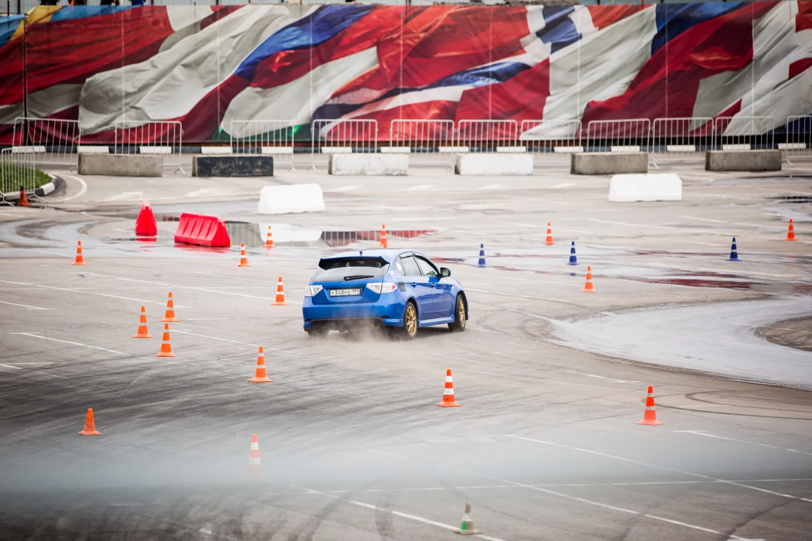
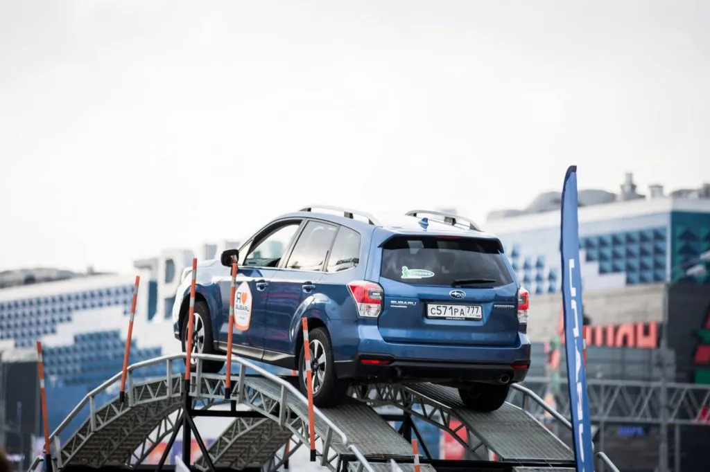
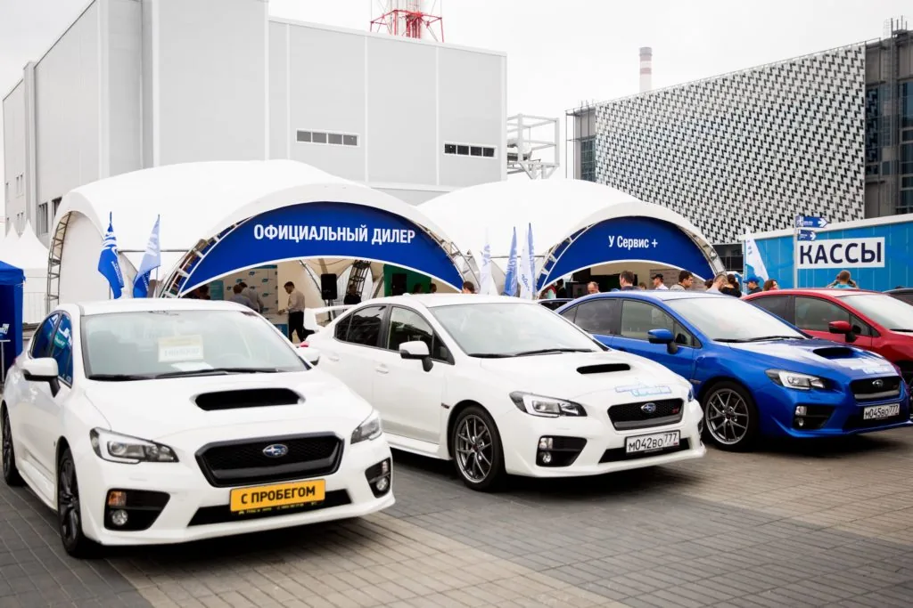
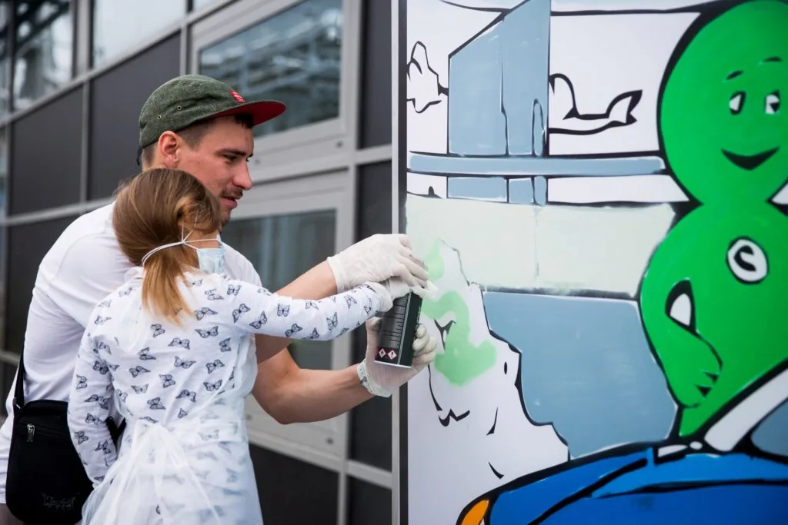
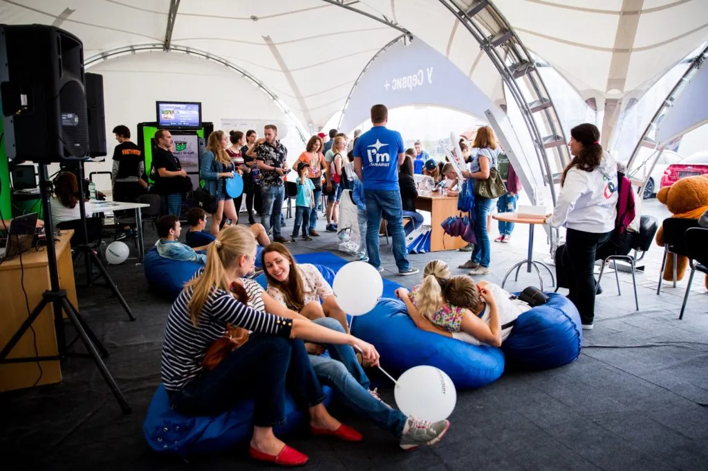
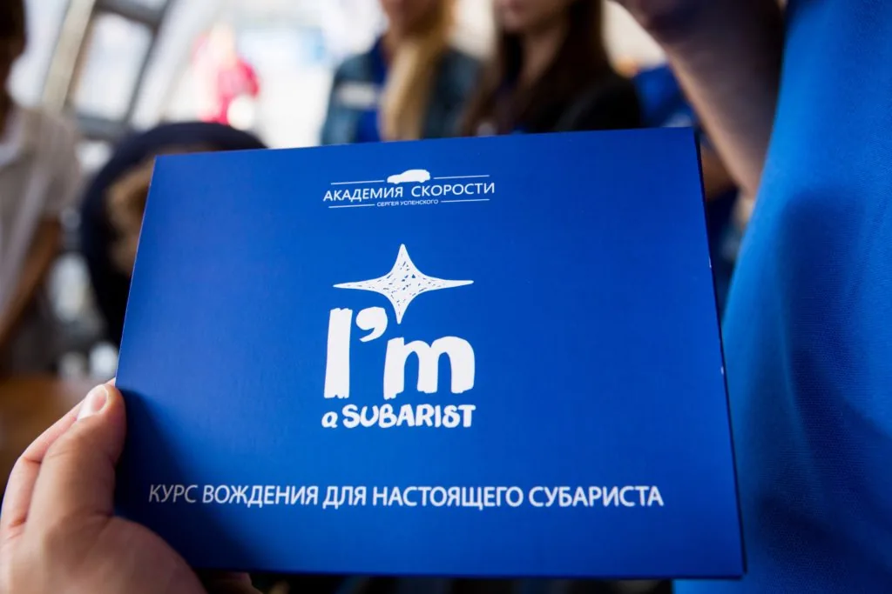

Subafest
Свой характер.
Свои люди.
Subafest с Subaru «У Сервис+»: более тысячи гостей и день, посвящённый автомобилям, движению и сообществу марки.
Автомобильный фестиваль · 1 000+ гостей · 2016
Больше, чем
любовь к автомобилю.
20 августа 2016 года Subafest объединил более тысячи гостей. Для Subaru «У Сервис+» фестиваль стал пространством встречи с людьми, которые разделяют характер марки.
Автомобили на площадке, демонстрационные маршруты и занятия для всей семьи создавали несколько сценариев дня. Динамичные эпизоды сменялись общением и отдыхом в зоне участников.
1 000+гостей
У Сервис+Subaru
20.08.2016дата фестиваля
02 / ВПЕЧАТЛЕНИЕХарактер виден
Характер виден
в движении.
Демонстрационные препятствия и заезды позволяли увидеть автомобили в действии. Вокруг этой динамики собиралась фестивальная жизнь — со своими героями, занятиями и маленькими открытиями.

03 / ФОТОИСТОРИЯОдин бренд.
Один бренд.
Много общих историй.




СЛЕДУЮЩИЙ ПРОЕКТ